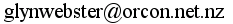

aw2c is a new compiler for the Algol W language. It is a complete implementation of the language described in the Algol W Language Description, June 1972. aw2c should be able to compile code intended for the OS/360 Algol W compilers with little or no modification. See the aw2c manual for more details.
Algol W is a successor to Algol 60 closely based on A Contribution to the Development of ALGOL by Niklaus Wirth and C. A. R. Hoare. It includes dynamically allocated records, string handling, complex numbers and a standard I/O system. A copy of the Algol W Language Description can be found on Karl Kleine's Historic Documents in Computer Science page. Dabcanboulet's Algol W @ Everything2 page contains an excellent history and tutorial.
aw2c correctly compiles Tony Marsland's computer chess player Awit and Hendrik Boom's A68H Algol 68 compiler.
The main requirements are a Unix environment, Gnu C, Python, OCaml and the Boehm-Demers-Weiser garbage collector. In Debian or Ubuntu "apt-get install gcc ocaml-nox python libgc-dev" is enough. For details read INSTALL.
Tar file: aw2c.tar.gz, for details read INSTALL.
Revision: "ela:/home/glyn/Aw2c/aw2c - Mon Apr 27 14:25:27 NZST 2009 glyn"
Thank you to: Hendrick Boom, Tony Marsland and Carey Bloodworth for a great deal of expert advice, encouragement and testing; the authors of the Algol W Language Description for creating such an unambiguous work; and Julian Melville, for this web hosting.
If you have found this software useful or enlightening, please consider donating to the Hooting Yard radio show or buying one of Frank Key's books. Frank Key keeps me sane, somehow.
aw2c is open source but its run-time library may be compiled into any program. The aw2c test suite contains parse.alw, a parser generator by Hendrik Boom, it remains copyright to its author. Otherwise, Copyright 2008 by Glyn Webster.
aw2c is free software: you can redistribute it and/or modify it under the terms of the GNU General Public License and Lesser GNU General Public License as published by the Free Software Foundation, either version 3 of the License, or (at your option) any later version.
